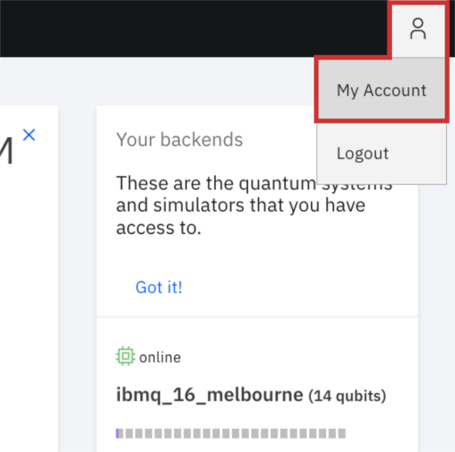
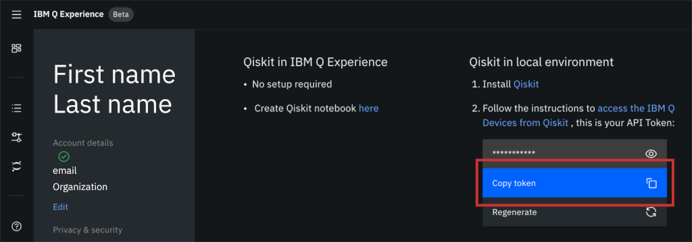

Qiskitのインストール¶
要件¶
QiskitはPython 3.5あるいはそれ以降をサポートします。
We recommend installing Anaconda, a cross-platform Python distribution for scientific computing. Jupyter Notebook, included in Anaconda, is recommended for interacting with the Qiskit tutorials.
Qiskitは以下の64ビットシステムでテストされサポートされています。
- Ubuntu 16.04またはそれ以降
- macOS 10.12.6またはそれ以降
- Windows 7またはそれ以降
WindowsでQiskitを使用するにはVC++ランタイムコンポーネントが必要です。下記のいずれかをおすすめします。
- Microsoft Visual C++ Redistributable for Visual Studio 2017
- Microsoft Visual C++ Redistributable for Visual Studio 2015
注釈
最新のQiskitコードに対して開発や寄与を行うことによってQiskitコミュニティに貢献したいときは、 Build Qiskit packages from source を参照してください。
インストール¶
Qiskitを他のアプリケーションから明確に分離して、経験をよりよいものにするため、Python仮想環境を使用することをおすすめします。
環境を使用するもっともシンプルな方法は、Anacondaに含まれている conda コマンドを使う方法です。Conda環境では、Pythonの特定のバージョンおよびライブラリを指定することができます。作業したいディレクトリでターミナルウィンドウを開きます。
Pythonのみをインストールした最小環境を作ります。
conda create -n name_of_my_env python=3
source activate name_of_my_env
Windowsをお使いの場合は
- Anacondaをインストールする
- Anacondaのコマンドプロンプトを探す
- Anacondaのコマンドプロンプトを開く
次のコマンドを使います
conda create -n name_of_my_env python=3
activate name_of_my_env
次に、Qiskitパッケージをインストールします。Terra, Aer, Ignis, そしてAquaが含まれています。
pip install qiskit
パッケージが正しくインストールされると、conda list で仮想環境に存在するアクティブなパッケージを見ることができます。
注釈
インストール中に、Failed to build qiskit という警告メッセージを見るかもしれません。これは致命的なエラーではなく、インストールには影響ありません。
注釈
When upgrading from Qiskit < 0.7 to the latest version, uninstall the old
version of Qiskit with pip uninstall qiskit and then install the latest version.
Qiskitで使うことのできるすべてのビジュアライゼーション機能を使用するためにはオプショナルな依存関係が必要です。 次のコマンドでこれらのオプショナルな依存関係をインストールできます。
pip install qiskit-terra[visualization]
使いたいQiskitパッケージをインストールおよび検証したら、Pythonのある自分の環境にインポートして作業を始めます。
import qiskit
IBM Q Systemsへのアクセス¶
IBM Q offers several real quantum computers and high-performance classical computing simulators through its quantum cloud services with Qiskit. Follow these steps to set up your Qiskit environment to send jobs to IBM Q systems.
注釈
With the release of Qiskit 0.11, if you had previously saved your IBM Q credentials locally, you might need to update your IBM Q Experience credentials so that you can use the new IBM Q Experience V2. See Updating your IBM Q Experience Credentials.
アカウントの設定には、ローカルの設定ファイルにAPIキーを追記します。
1. Create a free IBM Q Experience account.
手順 2: My Account に移動し、アカウントの設定を表示します。
手順3: トークンをクリップボードにコピーするには、Copy token をクリックします。 このAPIトークンを一時的にあなたのお気に入りのテキストエディターに貼り付けておいて、後でアカウント設定ファイルを作成するときに使用できるようにします。
手順4: 以下のコマンドを実行して、`` qiskitrc`` という設定ファイルで後に使用するために、ローカルにAPIトークンを保存します。 `` MY_API_TOKEN`` をテキストエディターに保存したAPIトークンの値に置き換えます。
from qiskit import IBMQ
IBMQ.save_account('MY_API_TOKEN')
Refer to Advanced Use of IBM Q Devices for more details, such as how to manage multiple IBM Q account credentials.
インストールされたバージョンの確認方法¶
Qiskit パッケージにはさまざまな要素の集まりが含まれているので、 qiskit.__version__ の実行では、 qiskit-terra パッケージのバージョンのみが返されるため、誤解を招く可能性があります。 これは Python の qiskit namespace が Qiskit パッケージから来ているのではなく、 qiskit-terra パッケージの一部だからです。
import qiskit
qiskit.__version__
0.8.2
あなたの環境のすべての Qiskit 要素のバージョンを見るためには、 __qiskit_version__ 属性を使います。例えば、次のコマンドを実行すると、インストールされている各 Qiskit パッケージのバージョンを含む dictionary が返されます。
import qiskit
qiskit.__qiskit_version__
{'qiskit': '0.11.0',
'qiskit-terra': '0.8.2',
'qiskit-ignis': '0.1.1',
'qiskit-aer': '0.2.3',
'qiskit-ibmq-provider': '0.3.0',
'qiskit-aqua': '0.5.2'}
ちなみに
あなたが issue を出すときや、何かの理由であなたがインストールしている Qiskit バージョンを共有する必要があるときは、__qiskit_version__ attribute を使用してください。